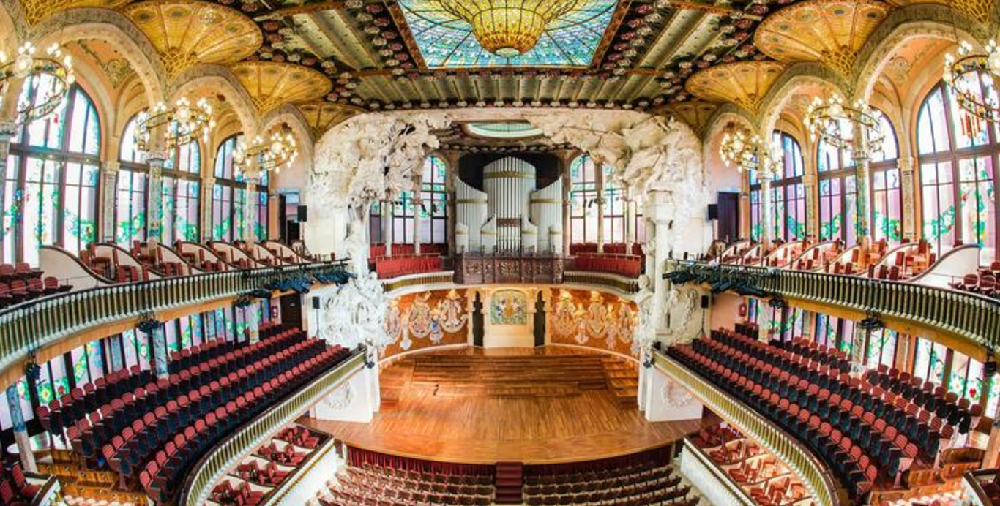

PALAU DE LA MUSICA ♭ ♬

☰
El Palau de la Música Catalana se encuentra en el Barrio de la Ribera de Barcelona.
Diseñado por el arquitecto catalán Lluís Domenech i Montaner, forma parte de los edificios más representativos del modernismo catalán.
Construido entre 1905 y 1908, el edificio acoge la sede del Orfeón Catalán, fundado por Lluís Millet y Amadeo Vives en 1891.
Su construcción fue un encargo solicitado por el propio Orfeó Català con el objetivo de convertirse en su sede social,
y fue declarado Monumento Nacional en 1971. El 9 de Febrero de 1908 se inaugura como auditorio para conciertos de música de orquestra
e instrumental, aunque con el paso de los años numerosos actos culturales, políticos, obras de teatro han tenido lugar en su escenario.
Actualmente, y debido a su excelente acústica, siguen pasando muchos de los mejores intérpretes y batutas de la escena internacional,
desde Richard Strauss hasta Daniel Bareinboim, pasando por Stravinski, Arthur Rubeinstein, Pau Casals y Frederic Mompou).
En su fachada podemos encontrar innumerables esculturas relacionadas con el mundo de la música,
que se funden con una arquitectura modernista y barroca. El trencadís y el vidrio se pueden encontrar a lo largo de toda la construcción.
En su interior destaca en la sala de conciertos la gran claraboya realizada por Antonio Rigalt i Blanch,
que predomina en lo alto de la sala como un gran sol con forma de esfera invertida, de cristales dorados en el centro,
otros más suaves azules alrededor y blancos que representan bustos femeninos.
Sobre el escenario 18 musas modernistas en relieve danzan saliendo de los muros, portadoras de instrumentos musicales
y sobre ellas el gran órgano que en 2003 fue restaurado gracias a las aportaciones privadas
y particulares que tuvieron la oportunidad de apadrinar un tubo.